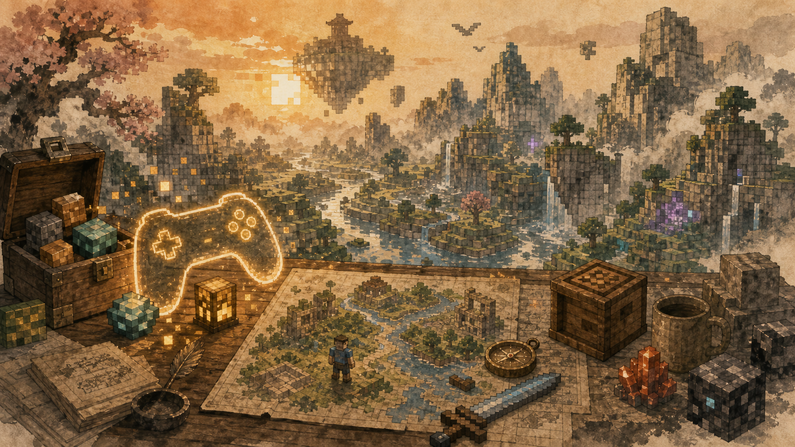

关于我
高中生一枚，网名「朔风霜月」
喜欢在像素方块和二次元世界里乱逛，也喜欢一个人背上包就出门旅行。希望通过这张 NFC 名片，认识同样热爱游戏、动漫与远方的你。
呼和浩特学生NFC 名片
关于我
喜欢在像素方块和二次元世界里乱逛，也喜欢一个人背上包就出门旅行。希望通过这张 NFC 名片，认识同样热爱游戏、动漫与远方的你。
动漫与轻小说
从《天气之子》《你的名字。》《铃芽之旅》到《86 -不存在的战区-》《莉可丽丝》，故事里的光、雨、列车和告别总能留下很久。

游戏世界
Minecraft ID: CN_YangYang，原神 UID: 847045298，也会在 CS2 里开一局。若你也在这些世界里，欢迎一起玩。
旅行足迹
旅行历史从 2020 年的呼和浩特开始，到 2026 年 2 月的洛阳、郑州、开封、新乡、朔州。每一页都用水墨方式记下一座城市的风物。
GitHub 与创作
GitHub 使用 shuangyue1124。这个站点本身也是一个小项目：多语言、静态部署、城市数据和水墨风格都可以继续扩展。
联系方式
Comments
评论会在防刷组件准备后加载。